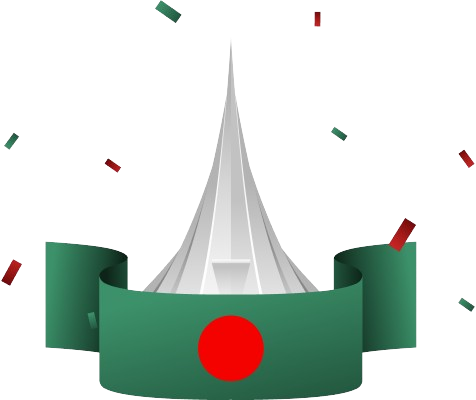
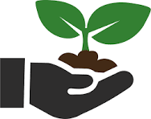
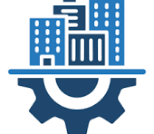
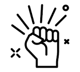
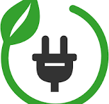
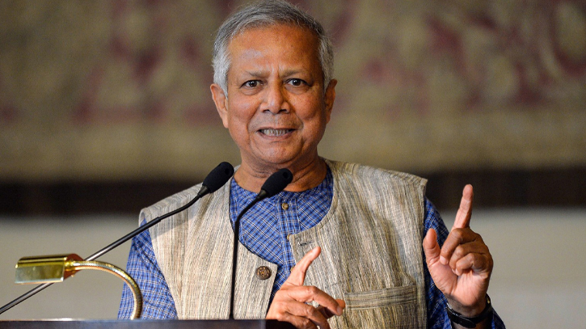
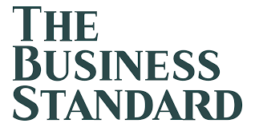
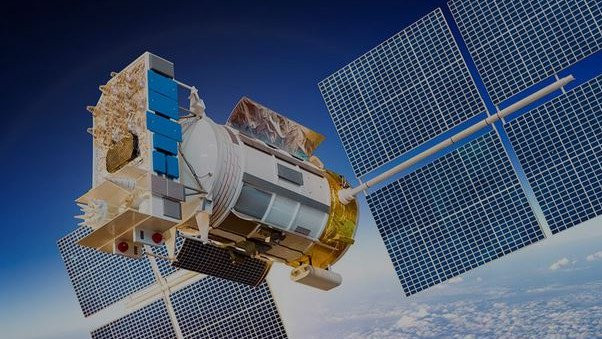
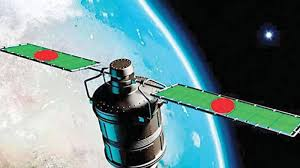

Bangladesh 2.0
Idea ,innovation,
vision and challenges in
New Bangladesh

Pillars of "Bangladesh 2.0"
Pillars of "Bangladesh 2.0": A vision-driven framework focusing on sustainable economic growth,
technological innovation, and inclusive development. It emphasizes education, infrastructure, and
governance
to empower citizens and position Bangladesh as a global leader.
Innovation
Innovation is the process of creating new ideas, products, or methods that improve existing
systems
and solve problems in unique and effective ways.

Sustainability
Sustainability is the practice of meeting current needs without compromising the ability of
future
generations to meet their own needs, focusing on environmental, economic, and social balance.

Infrastructure
Infrastructure refers to the fundamental physical and organizational structures needed for the
operation of a society, such as transportation systems, utilities, and communication networks.

Empowerment
Empowerment is the process of giving individuals the confidence, authority, and tools to take
control of their own lives and make independent decisions.
The Vision Of Future
The Vision of the Future: A harmonious world driven by Digital Transformation, Green Gnergy, and Modern
Infrastructure,
where technology empowers humanity, environmental balance is prioritized, and every individual thrives
in
equity and opportunity.
Digital Transformation
Digital transformation is the integration of digital technologies into all areas of business,
fundamentally changing how operations are conducted and value is delivered to customers.

Green Gnergy
Green energy refers to power derived from renewable, eco-friendly sources such as solar, wind,
hydro, and geothermal, aimed at reducing environmental impact.
Modern Infrastructure
Modern infrastructure refers to advanced systems and structures, including smart cities,
sustainable
transportation, energy-efficient buildings, and digital connectivity, that support contemporary
living and economic activities.
Dr. Muhammad Yunus Renowned as the "Banker to
the Poor," Dr. Yunus is a Nobel Peace Prize laureate celebrated for pioneering microfinance and
social
business. As Chief Adviser, he envisions an inclusive and equitable Bangladesh, focusing on
eradicating
poverty, empowering grassroots communities, and fostering sustainable economic growth. His
leadership
emphasizes innovation, ethical governance, and social harmony.
 Dr Muhammad Yunus
Chief Adviser of the people's Republic of Bangladesh
Your Opinion Matters
Questions
Select Your Opinion
Do you believe Bangladesh is on the right path toward becoming a
developed nation?
How can technology and innovation be leveraged to empower youth and drive national progress?
What steps should be taken to ensure inclusivity and equity in the development of Bangladesh
2.0?
Recent News
Recent News
Bangladesh 2.0 aims to redefine the nation's trajectory by embracing cutting-edge technology, promoting
inclusive growth, and ensuring sustainability. With initiatives in renewable energy, digital
transformation,
and robust infrastructure, the country is set to become a global model of development.
Bangladesh Launches New Satellite
Date: 05/01/2025 Time: 10:25 PM
France is keen to provide assistance in launching Bangladesh's second satellite Bangabandhu
Satellite-2
in space.French Ambassador to Bangladesh Marie Masdupuy expressed her country's interest while
paying a
courtesy call on Posts and Telecommunications Minister Mustafa Jabbar at his office at the
secretariat
in Dhaka on Wednesday, a press release said.He lauded Bangladesh's continued progress, especially in
the
digital technology sector.
Bangladesh Launches New Satellite

Date: 05/01/2025 Time: 10:25 PM
Bangabandhu Satellite-2, intended for earth observation, is set to be launched in mid-2025.
Bangabandhu
Satellite-2, intended for earth observation, is set to be launched in
mid-2025.The government is set to award the letter of intent (LOI) for Bangabandhu Satellite-2 to
French aerospace company Airbus.
Shahjahan Mahmood, chairman and CEO of the Bangladesh Satellite
Company Limited, Bangabandhu
Satellite-1.However, the US sanctions on Russia due to the Ukraine war did not allow the cooperation
to be realised.


Bangladesh Launches New Satellite
Date: 05/01/2025 Time: 10:25 PM
Bangladesh is getting ready to launch its second satellite "Bangabandhu Satellite-2" by 2023.
Bangladesh Satellite Company Limited (BSCL) signed an agreement with PricewaterhouseCoopers (PwC) at
its
head office today.Chairman of Bangladesh Telecommunication Regulatory Commission (BTRC) Shyam Sunder
Sikder, PWC representative Suparna Roy, Secretary of Post and Telecommunication Md Afzal Hossain,
among
others, were presen
Donate Today
"Donate Today" is a call to action urging individuals to contribute to a cause or charity immediately.
It
emphasizes the importance of making a donation now to support a specific mission or organization.
Subscribe Newsletter
This layout might be used for a subscription section on a website, where you want to make the title or
call-to-action prominent by displaying it on two separate lines for better readability or aesthetic
purposes.